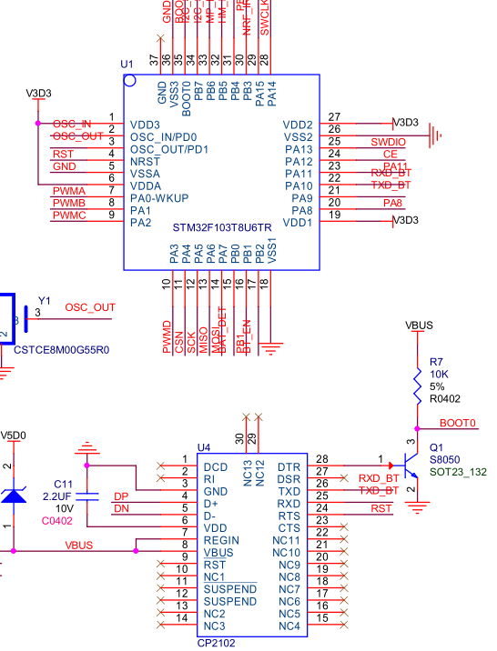

原文出处:本文由博客园博主田野小毛驴提供。
原文连接:https://www.cnblogs.com/tengye/p/11492511.html
原文连接:https://www.cnblogs.com/tengye/p/11492511.html
硬件说明：如原理图所示，
103的PA10 PA11分别接CP2102usb转串口芯片的TXD RXD引脚。CP2102芯片是将串口和电脑USB接口进行了转接，方便应用灵活。
片上串口驱动代码如下。


1 #include "usart.h"
2 #include "stm32f10x_usart.h"
3
4 #if SYSTEM_SUPPORT_UCOS
5 #include "includes.h" //ucos
6 #endif
7
8 #if 1
9 #pragma import(__use_no_semihosting)
10
11 struct __FILE
12 {
13 int handle;
14
15 };
16
17 FILE __stdout;
18 _sys_exit(int x)
19 {
20 x = x;
21 }
22
23 int fputc(int ch, FILE *f)
24 {
25 while(USART_GetFlagStatus(USART1,USART_FLAG_TC)==RESET);
26 USART_SendData(USART1,(uint8_t)ch);
27 return ch;
28 }
29 #endif
30
31
32 #if EN_USART1_RX
33 //´®¿Ú1ÖжϷþÎñ³ÌÐò
34 //×¢Òâ,¶ÁÈ¡USARTx->SRÄܱÜÃâĪÃûÆäÃîµÄ´íÎó
35 u8 USART_RX_BUF[USART_REC_LEN]; //½ÓÊÕ»º³å,×î´óUSART_REC_LEN¸ö×Ö½Ú.
36
37
38
39 u16 USART_RX_STA=0; //Receiving status marker
40
41 void USART1_IRQHandler(void)
42 {
43
44 u8 res;
45 #ifdef OS_CRITICAL_METHOD
46 OSIntEnter();
47 #endif
48 if(USART_GetITStatus(USART1, USART_IT_RXNE) != RESET) //½ÓÊÕÖжÏ(½ÓÊÕµ½µÄÊý¾Ý±ØÐëÊÇ0x0d 0x0a½áβ)
49 {
50 res =USART_ReceiveData(USART1);//(USART1->DR); //¶ÁÈ¡½ÓÊÕµ½µÄÊý¾Ý
51
52 if((USART_RX_STA&0x8000)==0)//½ÓÊÕδÍê³É
53 {
54 if(USART_RX_STA&0x4000)//½ÓÊÕµ½ÁË0x0d
55 {
56 if(res!=0x0a)USART_RX_STA=0;//½ÓÊÕ´íÎó,ÖØпªÊ¼
57 else USART_RX_STA|=0x8000; //½ÓÊÕÍê³ÉÁË
58 }
59 else //»¹Ã»ÊÕµ½0X0D
60 {
61 if(res==0x0d)USART_RX_STA|=0x4000;
62 else
63 {
64 USART_RX_BUF[USART_RX_STA&0X3FFF]= res;
65 USART_RX_STA++;
66 if(USART_RX_STA>(USART_REC_LEN-1))USART_RX_STA=0;//½ÓÊÕÊý¾Ý´íÎó,ÖØпªÊ¼½ÓÊÕ
67 }
68 }
69 }
70
71 }
72 #ifdef OS_CRITICAL_METHOD
73 OSIntExit();
74 #endif
75 }
76 #endif
77
78 //A11 RX A10 TX
79
80 void uart_init()
81 {
82
83
84 GPIO_InitTypeDef GPIO_InitStructure;
85 USART_InitTypeDef USART_InitStructure;
86 NVIC_InitTypeDef NVIC_InitStructure;
87
88 RCC_APB2PeriphClockCmd(RCC_APB2Periph_USART1|RCC_APB2Periph_GPIOA, ENABLE); //ʹÄÜUSART1£¬GPIOAʱÖÓ
89 USART_DeInit(USART1); //¸´Î»´®¿Ú1
90
91 GPIO_InitStructure.GPIO_Pin = GPIO_Pin_10; //PC.10
92 GPIO_InitStructure.GPIO_Speed = GPIO_Speed_50MHz;
93 GPIO_InitStructure.GPIO_Mode = GPIO_Mode_AF_PP; //¸´ÓÃÍÆÍìÊä³ö
94 GPIO_Init(GPIOA, &GPIO_InitStructure); //³õʼ»¯PA9
95
96
97 GPIO_InitStructure.GPIO_Pin = GPIO_Pin_11;
98 GPIO_InitStructure.GPIO_Mode = GPIO_Mode_IN_FLOATING;//¸¡¿ÕÊäÈë
99 GPIO_Init(GPIOA, &GPIO_InitStructure); //³õʼ»¯PA10
100 USART_InitStructure.USART_BaudRate = 9600;//Ò»°ãÉèÖÃΪ9600;
101 USART_InitStructure.USART_WordLength = USART_WordLength_8b;//×Ö³¤Îª8λÊý¾Ý¸ñʽ
102 USART_InitStructure.USART_StopBits = USART_StopBits_1;//Ò»¸öֹͣλ
103 USART_InitStructure.USART_Parity = USART_Parity_No;//ÎÞÆæżУÑéλ
104 USART_InitStructure.USART_HardwareFlowControl = USART_HardwareFlowControl_None;//ÎÞÓ²¼þÊý¾ÝÁ÷¿ØÖÆ
105 USART_InitStructure.USART_Mode = USART_Mode_Rx | USART_Mode_Tx; //ÊÕ·¢Ä£Ê½
106
107 USART_Init(USART1, &USART_InitStructure); //³õʼ»¯´®¿Ú
108 #if EN_USART1_RX //Èç¹ûʹÄÜÁ˽ÓÊÕ
109 //Usart1 NVIC ÅäÖÃ
110 NVIC_InitStructure.NVIC_IRQChannel = USART1_IRQn;
111 NVIC_InitStructure.NVIC_IRQChannelPreemptionPriority=3 ;//ÇÀÕ¼ÓÅÏȼ¶3
112 NVIC_InitStructure.NVIC_IRQChannelSubPriority = 3; //×ÓÓÅÏȼ¶3
113 NVIC_InitStructure.NVIC_IRQChannelCmd = ENABLE; //IRQͨµÀʹÄÜ
114 NVIC_Init(&NVIC_InitStructure); //¸ù¾ÝÖ¸¶¨µÄ²ÎÊý³õʼ»¯VIC¼Ä´æÆ÷
115
116 USART_ITConfig(USART1, USART_IT_RXNE, ENABLE);//¿ªÆôÖжÏ
117 #endif
118 USART_Cmd(USART1, ENABLE); //ʹÄÜ´®¿Ú
119
120 } 1 #ifndef __USART_H
2 #define __USART_H
3 #include "sys.h"
4 #include "stdio.h"
5
6 //////////////////////////////////////////////////////////////////////////////////
7 #define USART_REC_LEN 200
8 #define EN_USART1_RX 1
9
10 extern u8 USART_RX_BUF[USART_REC_LEN];
11 extern u16 USART_RX_STA;
12
13 void uart_init();
14
15 #endif 1 #include "sys.h"
2 #include "usart.h"
3 #include "delay.h"
4
5 #define LED0 PAout(8)// DS0
6 #define LED1 PBout(1)// DS1
7 #define LED2 PBout(3)// DS1
8 #define LED3 PAout(11)// DS1
9
10 int main(void)
11 {
12
13 u8 t=0;
14 u8 y=0;
15 Stm32_Clock_Init(9);
16 delay_init(72);
17 uart_init();
18
19 while(1)
20 {
21 printf("t999:%d\n",t);
22 delay_ms(1000);
23 t++;
24 if(y ==4)y=0;
25 switch(y)
26 {
27 case 0: LED0 = 1;LED1 =0; LED2 =0; LED3=0;break;
28 case 1: LED1 = 1;LED0 =0; LED2 =0; LED3=0; break;
29 case 2: LED2 = 1;LED0 =0; LED1 =0; LED3=0;break;
30 case 3: LED3 = 1;LED1 =0; LED0 =0; LED2=0;break;
31 }
32 y++;
33 }
34
35 return 0;
36 }